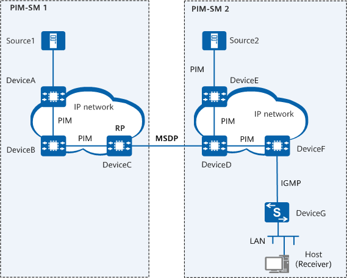

IPv4 Multicast Application
This section describes typical multicast service scenarios on an IPv4 network and the applications of multicast protocols and features in these scenarios. Multicast services should be configured based on the actual network situations and service requirements on your network. This section describes only the deployment of basic service functions.
Before deploying IPv4 multicast services on a network, ensure that IPv4 unicast routes on the network are normal.
Multicast in a Single PIM Domain
On a small-scale network, all network devices and hosts belong to the same PIM domain. Figure 1 shows the basic multicast service deployment in such a scenario.
Deployment Protocol |
Application Location |
Purpose |
|---|---|---|
PIM (mandatory) |
All interfaces of Layer 3 multicast devices in the multicast domain, including all interfaces of DeviceA, DeviceB, and DeviceC. For detailed configurations, see PIM Configuration. |
Sends multicast data from Source to DeviceB and DeviceC, which are connected to multicast receivers. |
IGMP (mandatory) |
User-side interfaces of Layer 3 multicast devices, including DeviceB and DeviceC For detailed configurations, see IGMP Configuration. |
Allows receiver hosts to join or leave multicast groups, and allows DeviceB and DeviceC to maintain and manage group memberships. |
Multicast Between PIM-SM Domains
A multicast domain can be divided into multiple isolated PIM-SM domains to facilitate the management of multicast resources, including groups, multicast sources, and group members. On the network shown in Figure 2, MSDP needs to be deployed to enable the PIM-SM domains to exchange multicast data.

MSDP is not required when PIM-SM uses the SSM model.

Deployment Protocol |
Application Location |
Purpose |
|---|---|---|
PIM-SM (mandatory) |
All interfaces of Layer 3 multicast devices in the PIM-SM domains, including all interfaces of DeviceA to DeviceF. For configuration details, see PIM Configuration. |
Sends multicast data from Source1 and Source2 to DeviceF, which is connected to the multicast receiver. In PIM-SM, the receiver host proactively joins a multicast group, and then multicast data is sent to the receiver host through the RP. |
IGMP (mandatory) |
User-side interfaces of Layer 3 multicast device DeviceF in the PIM-SM domains. For configuration details, see IGMP Configuration. |
Allows receiver hosts to join or leave multicast groups, and allows DeviceF to maintain and manage group memberships. |
MSDP (mandatory) |
RPs (DeviceC and DeviceD) in PIM-SM domains. For configuration details, see MSDP Configuration. |
Transmits multicast data between PIM-SM1 and PIM-SM2. Host in PIM-SM2 can receive data from Source1. |